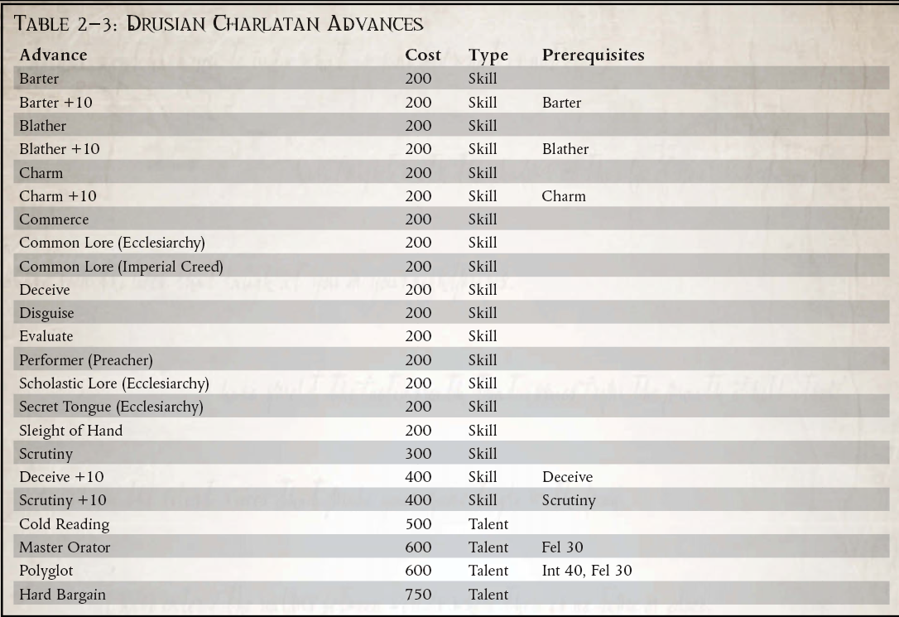

“当我们面临无法形容的恐怖、深不可测的诱惑和对我们人类本身的威胁时，我们在帝国边境的可怜灵魂几乎迷失了方向。只有圣杜苏斯仁慈的守望，才让我们能安全度过风暴。”
- '修女' Styliane，落脚点中的文物小贩
在浩瀚宇宙中，有些人会利用同胞的信仰来谋生。这些人这样做并不是为了换取他们指控的精神健康，就像真正的教会成员所做的那样，而是他们是骗子、骗子和骗子。这些江湖骗子靠贩卖受人尊敬的圣德鲁苏斯的假遗物为生，作为对抗黑暗的护身符、治疗致命疾病和驱散不幸的符咒。广域和邻近的卡利西斯星区的人民和人类帝国的任何人一样虔诚，那些愿意为自己的目的滥用这种虔诚的人可以获得大量利润。事实上，广袤的普通人远比他的洞察力或学识要虔诚得多，数千年来不断传教士的布道使民众倾向于相信那些声称拥有某种程度的教会权威的人。
作为帝国扩张的前沿，克罗努斯广域面临着各种各样的威胁，深渊之外的生活充满了恐惧。异形攻击的威胁、混沌的掠夺以及环境本身都可以掠夺意志薄弱的人的思想和灵魂。德鲁西亚的江湖骗子正是从这些恐怖中提供了帮助。只需简短的交谈，江湖骗子就可以收集他的印记最害怕的东西，并提供给他，当然，只需支付适度的费用，就能确保能够抵御特定的邪恶。正如所料，这些遗物绝不是真品，但说服他的受害者否则是骗子的艺术。
有些人可能会将德鲁西亚江湖骗子的行为与冷贸易或海盗等“大”罪行相比较。那些人低估了教会在广袤地区大多数人日常生活中的重要性。在深渊的边界之外，信仰往往是人类与帝国之间为数不多的纽带之一，而江湖骗子则直接利用这些纽带。此外，销售小饰品和护身符所学到的技能可以演变成更大的弊端和巨大的财富。
广袤的江湖骗子特别关注卡利克斯人对他们的守护神圣将军的无比忠诚。像德鲁苏斯这样广为人知且平易近人的人物使他成为江湖骗子计划中的简单工具。在卡利西斯星区和科罗努斯广域内，对圣德鲁斯的崇敬如此盛行，安茹十字军的战场如此普遍，以至于普通人不难相信他所提供的烧焦的塑料块是来自圣德鲁苏斯本人的盔甲，或者他刚买的那块颚骨曾经属于圣徒的个人伺服颅骨。由于圣德鲁苏斯的足迹遍布卡利西斯星域和广域网，因此它是一个罕见的系统，尚未声称与圣人有明显的联系。这使得圣物的收集对于德鲁斯的江湖骗子来说变得特别容易，因为任何一点战场残骸、人类遗骸、古老的祈祷纸等都可以很容易地看起来与圣德鲁斯有关，从他在任何系统中的时间开始，或者在任何一个骗子碰巧在工作的空间站或星球上。
鉴于在整个帝国数千年的历史中传教士滥用职权，博学的人常常对那些愿意为了自己的目的而歪曲信仰的人保持警惕。江湖骗子经常受到这类人的极大怀疑，他们倾向于将他们的基本操纵视为走向更大异端的第一步。同样，执法人员，通常是广域的行星执法者，密切关注江湖骗子小贩的活动，尽管他们的权力通常将他们的起诉限制在违法行为上。然而，这并不是说执法者并不完全愿意将欺诈者交给教会的代理人。
Charlatans 显然不是 Expanse 中唯一的骗子类型。传统的骗子，他们的骗子，在广袤的土地上游荡，欺骗死水的边境公民和精明的政客。这些世俗的骗局经常实施比出售假文物或治疗更有利可图的方法的计划，尽管他们的艺术很少危及他们标记的灵魂。一个有魅力的双重交叉雇佣兵，一个伪装成图表飞行员的快速谈话的绑架者，或者一个利用他的视力宣布虚假愿景的灵能者，他们中的每一个都使用与德鲁斯江湖骗子相同的策略和计划来谋取利益。
当一个人决定自己的利益值得滥用他们信仰的普通民众时，他决定成为德鲁苏斯的骗子，而不是之前。也许这个未来的骗子从一开始就对信仰没有多大用处，或者他可能是一个因长期在广域中的灾难和不幸而苦恼的前人。无论如何，在他们成为江湖骗子的那一刻，探索者已经走出了帝皇的光芒，必须永远保护自己的行为不受国教的偏执眼光的影响，以免受到正义的迫害。他们的工作超出了国教的视野，他们的行为与那个杰出的组织背道而驰，将他们变成了愤世嫉俗的愤世嫉俗者，试图为自己的目的欺骗帝国忠实、诚实的公民。
所需职业：除 Explorator、Kroot 或 Ork 之外的任何职业替代等级：1 或更高 (5,000 xp)
其他要求：以下技能之一（易货贸易、喋喋不休、魅力、商业或审查）或敌人（国教）或竞争对手（国教）才能。探险者必须有 35 的联谊会。要成为德鲁斯骗子，探险者必须直接从出售假文物、祈祷、治疗或其他奇迹般的工作中获利。
特殊：Drusian Charlatans 如果他们还没有天赋敌人（Ecclesiarchy），他们会自动获得天赋敌人（Ecclesiarchy）。

冷读（天赋）
要求：喋喋不休+10，审查+10。
结合快速交谈和肢体语言解释，Charlatan 可以快速评估细心的人群和潜在客户。骗子利用民众的恐惧和迷信，吸引他的人群在不知不觉中告诉他他们相信什么可以将他们从广袤的日常生活中的恐怖中拯救出来。
在进行商业、易货或魅力测试之前，骗子可能会进行被目标的意志力或审查反对的废话测试。如果 Blather 测试成功，则骗子诱使目标放弃一些重要信息，然后骗子可能会进行挑战 (+0) 审查测试以评估所获得信息的重要性。如果成功，骗子在针对目标的每点感知加值的下一次商业、易货交易或魅力测试中获得 +5 加值。他已经确定了有关目标的信息，这将有助于他的推销、谈判或外交。